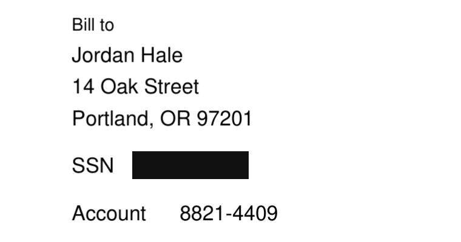
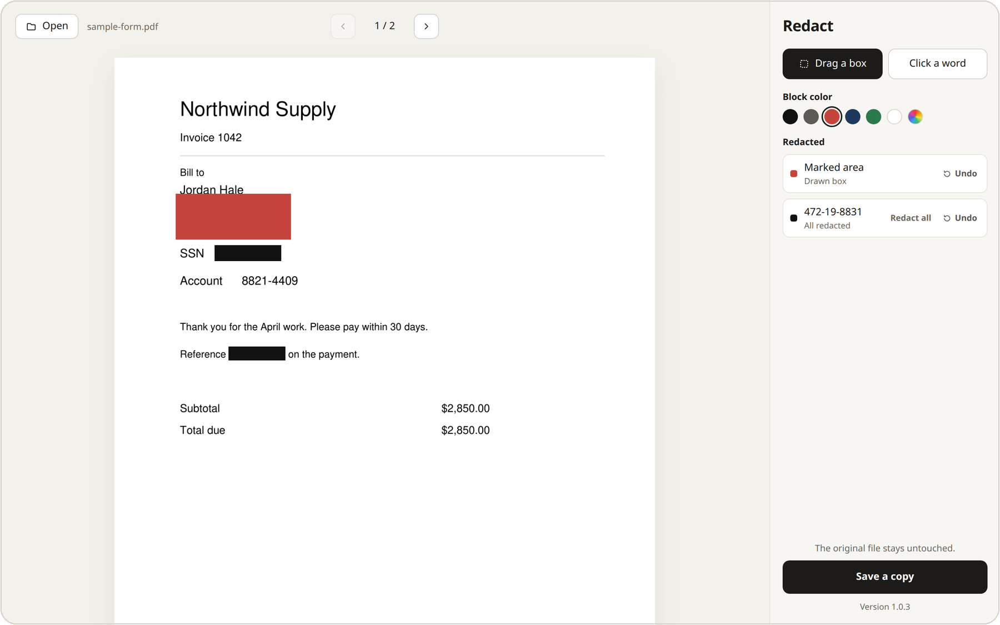
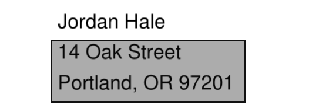
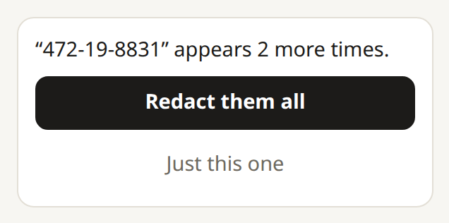

01
Click a word
The whole word is covered.

Windows
Take names, numbers, and other private details out of a PDF before you send it.
The original file stays as it is. A block deletes the text under it, so the word cannot be copied out or searched.
Nothing to install
Open the download and it runs. There is no setup. In the browser, the PDF stays on this computer.

How it works
01
The whole word is covered.

02
Cover a signature, a photo, or part of a scan.

03
If that word appears again, cover every remaining copy in the file.

Black is the default. Every color removes the text.
Take a redaction back from the list.
The new file ends in -redacted. The original stays.